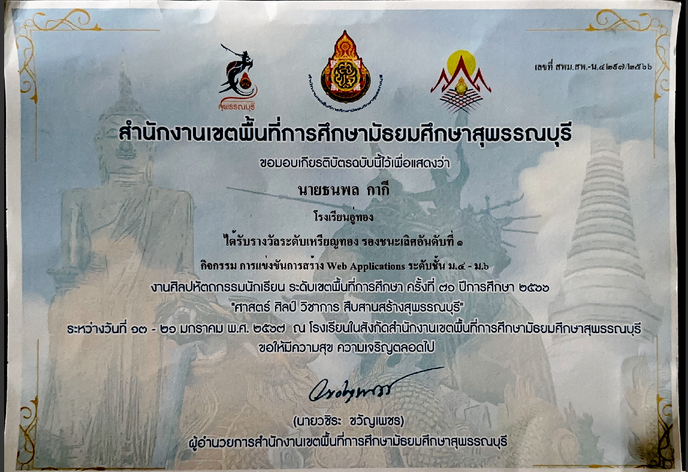

TEAM PORTFOLIO
ผลงานรวมของทีม Portfolio
 Completed
Completed
DropCTF x Permis Security — Beginner Red Team Assessment
การจำลองการโจมตีเต็มรูปแบบเพื่อประเมินความแข็งแรงของระบบป้องกันทั้งองค์กร

NO_IMAGE_DATAเหรียญทอง รองชนะเลิศอันดับ 1 — การแข่งขันสร้าง Web Applications ม.4-ม.6
รางวัลเหรียญทอง รองชนะเลิศอันดับที่ 1 กิจกรรมการแข่งขันการสร้าง Web Applications ระดับชั้น ม.4-ม.6 งานศิลปหัตถกรรมนักเรียน ระดับเขตพื้นที่การศึกษา ครั้งที่ 31 ปีการศึกษา 2566 "ศาสตร์ศิลป์ วิชาการ สืบสานสร้างสุพรรณบุรี" จัดโดยสำนักงานเขตพื้นที่การศึกษามัธยมศึกษาสุพรรณบุรี ณ โรงเรียนอู่ทอง ระหว่างวันที่ 13-21 มกราคม 2567 ผลงานจากการทำงานร่วมกันเป็นทีม
 Completed
Completed
เหรียญทองแดง — STEM & Microcontroller Project (46ict AI for a New Future)
รางวัลเหรียญทองแดง กิจกรรมการแข่งขันโครงงานสะเต็มศึกษาและกล่องสมองกล (STEM & Microcontroller Project) นำเสนอภาษาไทย ระดับชั้น ม.4-6 ในงานการแข่งขันมหกรรมวิชาการ "46ict พัฒนาชีวิต ด้วยปัญญาประดิษฐ์ สู่โลกอนาคตใหม่ (Advancing Lives with AI for a New Future)" จัดโดยกลุ่มโรงเรียนผู้นำ 46ict และเครือข่าย ระหว่างวันที่ 23-25 สิงหาคม 2567 ณ จังหวัดภูเก็ต ผลงานจากการทำงานร่วมกันเป็นทีม
 Completed
Completed
เหรียญเงิน — การแข่งขันหุ่นยนต์ระดับสูง ม.4-ม.6
รางวัลเหรียญเงิน กิจกรรมการแข่งขันหุ่นยนต์ระดับสูง ระดับชั้น ม.4-ม.6 งานศิลปหัตถกรรมนักเรียนระดับเขตพื้นที่การศึกษา ครั้งที่ 72 ปีการศึกษา 2567 จัดโดยสำนักงานเขตพื้นที่การศึกษามัธยมศึกษานนทบุรี ระหว่างวันที่ 14-19 มกราคม 2568 ผลงานจากการทำงานร่วมกันเป็นทีมในการออกแบบและควบคุมหุ่นยนต์
 Completed
Completed
Hack The Scammer CTF 2025
ใบประกาศนียบัตรจากสำนักงานคณะกรรมการการรักษาความมั่นคงปลอดภัยไซเบอร์แห่งชาติ (NCSA) และกระทรวงดิจิทัลเพื่อเศรษฐกิจและสังคม สำหรับการเข้าร่วมกิจกรรมการแข่งขัน "Hack The Scammer CTF 2025" รูปแบบออนไลน์ เมื่อวันที่ 13 ธันวาคม 2568
 Completed
Completed
Thailand Cyber Talent 2025 — Certificate of Appreciation
Certificate of Appreciation จากสำนักงานคณะกรรมการการรักษาความมั่นคงปลอดภัยไซเบอร์แห่งชาติ (NCSA) ร่วมกับ Huawei และ Thailand National Cyber Academy (THNCA) มอบให้แก่ นันท์อนณ ตั้งใจพอเพียง ในนามทีม Toffy888 จากโรงเรียนราชวินิต นนทบุรี สำหรับการเข้าร่วมโครงการ "Thailand Cyber Talent 2025" มอบให้เมื่อวันที่ 30 สิงหาคม 2568